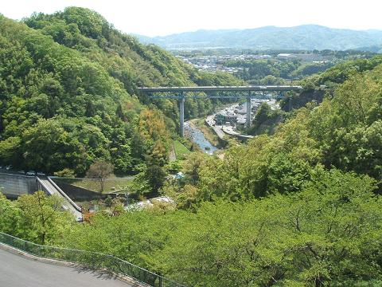
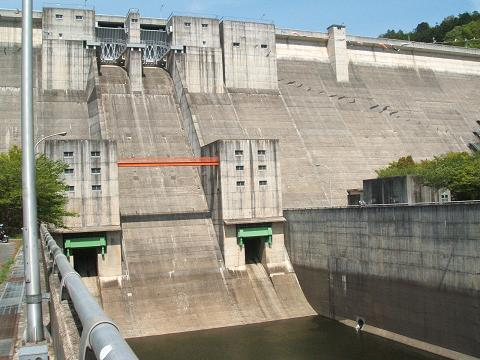
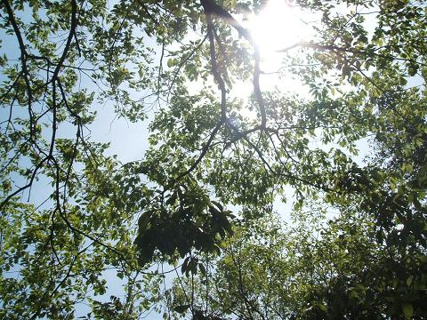
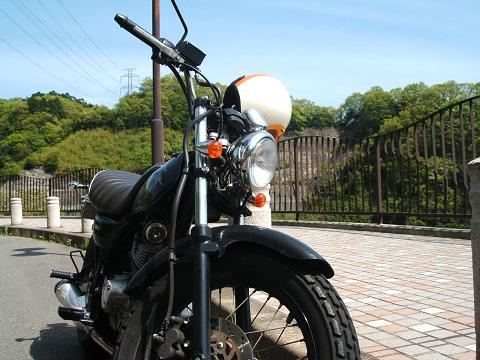
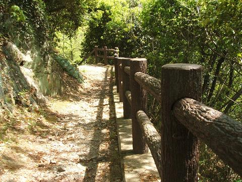
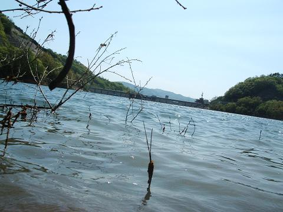
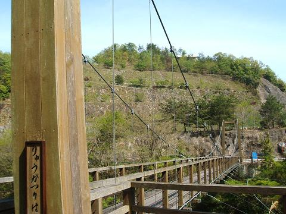
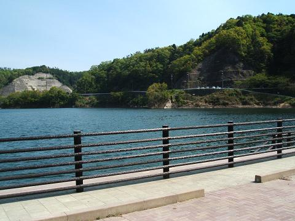

２００６一庫ダム〜家からちょっとのプチツーリング〜５/５
前にも言ったような気がするんだけど、
ツーリングのことを「二人で行く」からツー(two)リングって思ってはいませんか？
ツーリングってのは英語で「旅をする」の tour の ing 形ですよ。
なので一人で行くツーリングってのももちろんあります、
そういうのをソロツーリングって言いいます。
ちなみにそこそこの人数で行くツーリングを
マスツーリングと言ったりします、タケユキです。
今回は家から３０分弱とそんな遠くないんだけど
今まで行ったことなくてせっかくだからということで行ってきました、
兵庫県の北部にある一庫ダム。
ちなみに「一庫」で「ひとくら」と読みます。

この一庫ダムは猪名川に流れ込む水量を調節し、水害を未然に防ぎ、
尼崎・西宮・伊丹・宝塚・川西・池田といった街に住む人へ水道用水を提供しています。

このダムは「重力式コンクリートダム」といわれるダムで、
簡単にいうと大量のコンクリートを使ってそのコンクリート自体の重さで
水をせき止めようという日本でよく用いられている型式のダムです。
他に岩石や土砂を積み上げて建設する形式のロックフィルダムとかいうのもあって、
歴史的に有名(たぶん)なアスワンハイダムとかはこっちの形式らしい。
一口にダムと言っても奥が深いので興味のある人は調べてみては。
ダムのせき止め部分を見たら次はダムのため池周辺をぐるり。
ダムの中に公園とか散策エリアがあるらしいのでそこへ。

空は快晴。この日の最高気温２５度。
気分は真夏。というわけで半そでに。

バイクを途中に止めて散策へ。
散策と行ってもちゃんとした道があったりなかったりで
どちらかというと探検気分。

途中舗装された道とやや獣道っぽい道との分かれ道。
ためらわず獣道っぽい道を選ぶ。
数分後スニーカーでこなかった自分にちょっと後悔。
下る、
下る、
下る。
ため池のほとりに到着。

池っていうかもうほとんど海みたい、波打ってるし。
獣道の先はここで行き止まりだったので戻る。
舗装路の先を進むとそこにはつり橋が。

つり橋ってのはけっこう揺れるだろうってイメージが
あったから恐る恐る歩いた。
けど思ったより揺れんのね、この橋。
あぁ大丈夫かと思って普通に歩こうとしたら後ろから
「わ〜〜〜！！」ドタドタドタ！！
「キャーーーー」バタバタバタ！！
姉弟と見られる子ども二人が走り抜ける。
・・・お前らケンカ売ってんのか。

道を抜けたところに開けた場所が。
天気もいいし、少し歩いて疲れたので昼寝。
気付いたら１時間ばかし寝てた。
周りには家族連れとかがいるのに男一人が横になって昼寝。
少し怪しまれたような気がせんでもない。
一通り回ってちょうどいい時間になったんで帰路へ。
帰りはゴールデンウイークらしく大渋滞。
でも単車なので渋滞関係なし。
車？はいじゃまじゃま！みたいなノリですり抜けて帰宅。
帰りに後ろから爆走で追い抜いてったTWが
すり抜け途中車のミラーにぶつけたらしく謝ってるのを見かけた。
今日学んだこと、
「すり抜けはできるかどうか迷ったらやめろ」、
うん、これってけっこう大事。
戻る